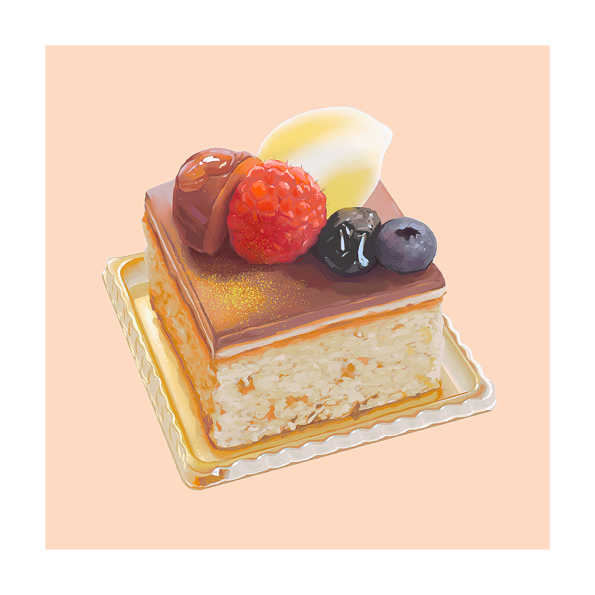
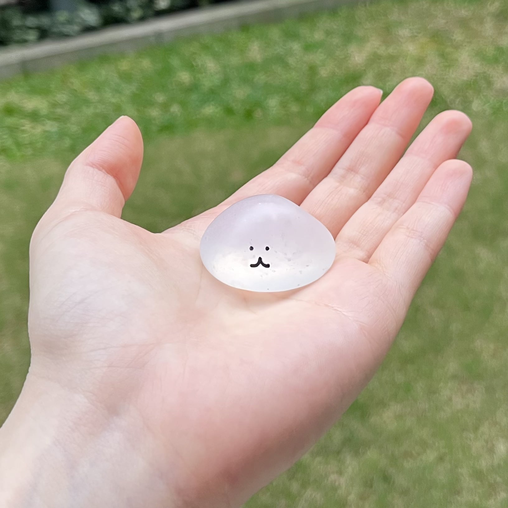

作ったもの
描いたもの
色々まとめた
土屋の自由帳
描いたもの
色々まとめた
土屋の自由帳

🐰🔈🥕でキャラデザイン
🥜💀🏖でキャラデザイン
🫐🏚💽でキャラデザイン
クリームソーダ

チョコと栗のケーキ
シブースト
かわいい、カラフル、ポップな
イラストが得意です

モデリング
合格祈願
睡眠の自由
Take Out

空音宙
ハッピーレインボーゆいゆい
絵となります
言葉が持つ印象を、グラフィックに
落とし込むことが好きです

消火器のうにゃもにゃ
たわしのうにゃもにゃ
カラーコーンのうにゃもにゃ
傘のうにゃもにゃ
クローバーのうにゃもにゃ

うにゃもにゃの赤ちゃん
展示風景
展示風景
展示風景
「身の周りのものに擬態する」という生態をもつ、
「うにゃもにゃ」という生き物を制作し、
大学構内で展示しました